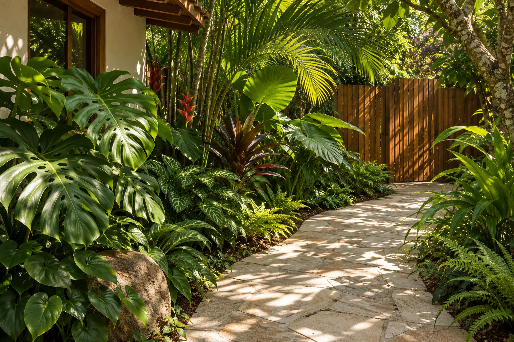

Jardim novo
Um projeto para aproveitar a sombra e a circulação, com plantas adequadas ao espaço.

Jardins que combinam com a luz do terreno, o tempo de cuidado e a maneira como você usa o espaço.
Contar sobre meu jardimUm projeto para aproveitar a sombra e a circulação, com plantas adequadas ao espaço.
Cuidado periódico com poda, canteiros e organização das áreas verdes.
Atualização de um jardim existente considerando a luz e a rotina de rega.
Mostre o tipo de cuidado, a luz e o tamanho aproximado para que a equipe prepare a visita.
Simulação concluída. Nenhum pedido foi enviado.